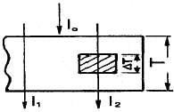
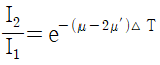
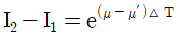
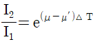
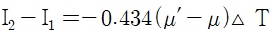
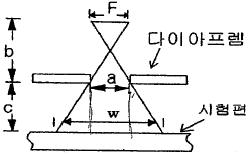

방사선비파괴검사기사 (2019-03-03 기출문제)
1과목: 비파괴검사 개론
1. x선투과시험과 비교한 γ선투과시험의 장점에 대한 설명으로 틀린 것은?
- 운반하기 쉽고, 협소한 장소에 접근하기 쉽다.
- 동일한 에너지 범위일 경우 x선 장비보다 가격이 저렴하다.
- γ선은 동위원소의 핵에서 필요치 않다.
- 에너지가 높으므로 두꺼운 검사체에 사용할 수 있고, 선명한 투과사진을 얻을 수 있다.
(정답률: 42%)

2. 자분 분상매가 가져야 할 특성에 대한 설명 중 옳은 것은?
- 휘발성이 크고, 점도는 낮아야 한다.
- 점도가 낮고, 장기간 변질이 없어야 한다.
- 인화점이 낮고, 인체에 유해하지 않아야 한다.
- 적심성은 나쁘며, 결함에서 활발한 화학반응이 일어나야 한다.
(정답률: 67%)
3. 다음은 와전류탐상시험에서 표피효과의 기준이 되는 침투깊이에 대해 기술한 것이다. 올바른 것은?
- 시험체의 투자율이 낮을수록 침투깊이는 얕다.
- 시험체의 도전율이 높을수록 침투깊이는 깊다.
- 시험주파수가 낮을수록 침투깊이는 얕다.
- 탄소강과 알루미늄 중 탄소강이 침투깊이가 얕다.
(정답률: 46%)
4. 1cm 직경의 구리 봉을 2cm 직경의 코일로 검사하는 경우의 충전(진)율은?
- 0.25(25%)
- 0.5(50%)
- 2.0(200%)
- 4.0(400%)
(정답률: 63%)
5. 시험체에 있는 도체에 전류가 흐르도록 한 후, 시험체중의 전위분포를 계측하는 비파괴검사방법은?
- 전기저항법
- 화학분석검사법
- 방사선투과 검사법
- 음파-초음파 검사법
(정답률: 80%)
6. 고강도 알루미늄 합금인 두랄루민의 주요 구성 원소는?
- Al-Cu-Mn-Mg
- Al-Ni-Co-Mg
- Al-Ca-Si-Mg
- Al-Zn-Si-Mg
(정답률: 82%)
7. 2원계 상태도에서 포정 반응으로 옳은 것은?
- (액상)→(고상A)+(고상B)
- (액상A)+(액상B)→(고상)
- (고상A)→(고상B)+(고상C)
- (고상A)+(액상)→(고상B)
(정답률: 44%)
8. 실루민은 어느 계통의 합금인가?
- Al-Si계 합금
- Fe-Si계 합금
- Cu-Si계 합금
- Ti-Si계 합금
(정답률: 84%)
9. 은백색을 띠며 비중이 1.74로 실용금속 중 가장 가볍고 HCP 격자구조를 가지는 금속은?
- Cd
- Cu
- Mg
- Zn
(정답률: 67%)
10. Cu-Zn계 상태도에서 α상의 격자구조는?
- 조밀육방격자
- 체심입방격자
- 사방조밀격자
- 면심입방격자
(정답률: 50%)
11. 피로한도에 대한 설명으로 옳은 것은?
- 지름이 크면 피로한도는 커진다.
- 노치가 있는 시험편의 피로한도는 크다.
- 표면이 거친 것이 고운 것보다 피로한도가 작다.
- 산, 알칼리, 물에서 부식된 시험편의 피로한도는 부식 전보다 크다.
(정답률: 56%)
12. 탄소의 함량이 가장 낮은 것에서 높은 순서로 나열한 것은? (단, 오른쪽으로 갈수록 탄소의 함량이 높다.)
- 전해철＜연강＜주철＜경강
- 전해철＜연강＜경강＜주철
- 연강＜전해철＜경강＜주철
- 연강＜전해철＜주철＜경강
(정답률: 64%)
13. 비금속 개재물 검사 분류 항목 중 그룹 B에 해당하는 것은?
- 황화물 종류
- 규산염 종류
- 단일 구형 종류
- 알루민산염 종류
(정답률: 37%)
14. 다음 중 쾌삭강에서 쾌삭성을 향상시키는 원소와 가장 거리가 먼 것은?
- S
- Se
- Cr
- Pb
(정답률: 36%)
15. 로크웰경도시험의 시험하중에 해당되지 않는 것은?
- 588.4N
- 980.7N
- 1471N
- 1962N
(정답률: 58%)
16. 다음 중 연납 땜과 경납 땜을 구분하는 온도는?
- 350℃
- 400℃
- 450℃
- 500℃
(정답률: 67%)
17. 피복 아크 용접시 발생되는 보호 가스의 성분 중 가장 많이 발생하는 가스는?
- CO
- CO2
- H2
- H2O
(정답률: 47%)
18. 아크 용접에서 용접일열 30000J/cm, 용접전압이 40V, 용접전류 125A일 때 용접속도는 몇 cm/min인가?
- 10
- 20
- 30
- 40
(정답률: 41%)
19. 탄소강의 피복 아크 용접에서 기공 발생의 원인이 아닌 것은?
- 용접 분위기 내 수소의 과잉
- 충분히 건조한 저수소계의 용접봉 사용
- 모재에 유황 함유량 과대와 용접부의 급랭
- 과대 전류를 사용하고 용접속도가 빠를 때
(정답률: 79%)
20. 일반적인 플럭스 코어드 아크 용접의 특징으로 옳은 것은?
- 비드 외관이 거칠다.
- 양호한 용착금속을 얻을 수 있다.
- 아크가 불안정하고 스패터가 많다.
- 용제에 탈산제, 아크 안정제 등이 포함되어 있지 않다.
(정답률: 59%)
2과목: 방사선투과검사 원리
21. 방사선투과검사에서 가장 선명하고 실물에 가까운 영상을 얻기 위한 조건이 아닌 것은?
- 초점과 시험체간의 거리는 가능한 가까워야 한다.
- 초점은 가능한 작아야 한다.
- 필름은 가능한 시험체와 밀착해야 한다.
- 방사선빔은 가능한 한 필름과 수직이 되도록 한다.
(정답률: 68%)
22. 방사선투과검사에서 연속 X선의 설명으로 틀린 것은?
- 물질의 투과가 어려운 X선을 연(soft) X선이라 한다.
- 경(hard) X선의 흡수계수는 크다.
- 연(soft) X선의 흡수계수는 크다.
- 경(hard) X선의 반가층은 얇다.
(정답률: 30%)
23. Ra-226의 방사성 붕괴과정에서 4.79MeV의 에너지를 발생하는 붕괴로 옳은 것은?
- α붕괴
- β붕괴
- 전자포획
- γ붕괴
(정답률: 59%)
24. 인공 방사성동위원소를 만드는 일반적인 방법이 아닌 것은?
- 중성자 방사화
- 핵분열 생성물로 부터의 분리
- 하전입자의 충돌
- 우라늄, 토륨, 액티늄계열 생성물로부터 분리
(정답률: 42%)
25. 방사선투과검사는 방사선의 어떤 특성 차이를 이용하여 결함을 검출 하는가?
- 흡수계수
- 열전도계수
- 팽창계수
- 탄성
(정답률: 79%)
26. 중성자투과검사의 직접법에 이용하는 변환자로 구성된 것은?
- Gd, Rh
- Au, Dy
- In, Dy
- CaWO4, PbO2
(정답률: 58%)
27. X선과 γ선의 공통적인 특징에 대한 설명으로 틀린 것은?
- 전리, 전자기 방사선이다.
- 에너지의 단위는 Ci이다.
- 무게나 질량이 거의 없다.
- 인체에 장해를 유발시킬 수 있다.
(정답률: 66%)
28. 그림과 같이 일반 투과방사선량률을 I1, 결함부 투과방사선량률을 I2라 할 때 피사체 콘트라스트에 관한 관계식은? (단, T : 피사체 두께, △T : 결합부 두께, μ : 감쇠계수, μ‘ : 결함부의 감쇠계수, Io : 입사방사선량률이다.)





(정답률: 54%)
29. X선 투과사진의 피사체콘트라스트에 대한 설명으로 틀린 것은?
- 관전압이 올라가면 감소한다.
- 산란선이 많으면 증가한다.
- 시험체의 두께차가 크면 증가한다.
- 엑스선 파장이 짧아지면 감소한다.
(정답률: 41%)
30. 일반적인 방사선투과사진에서 식별 가능한 최소 크기를 나타내는 척도는?
- 명료도
- 선명도
- 상질
- 분해능
(정답률: 53%)
31. 1 Ci 강도의 Ra-226은 400년이 지난 후 약 몇 Ci의 강도로 되는가?: (단, 방사성동위원소 Ra-226의 반감기는 1600년이다.)
- 0.5Ci
- 0.7Ci
- 0.75Ci
- 0.84Ci
(정답률: 52%)
32. 수소의 경우 수소, 중수소, 삼중수소가 존재한다. 이것을 무엇이라 하는가?
- 동위원소
- 동중핵
- 동중성자핵
- 이성핵
(정답률: 64%)
33. 방사선방어에 사용되는 단위의 설명으로 틀린 것은? (단, C는 쿨롱, J는 줄(joule)이다.)
- 1R=2.58×10-4C/kg
- 1Gy=1J/kg
- 1Ci=3.7×1010Bq
- 1ard=1erg/g
(정답률: 48%)
34. 방사성동위원소 Ir-192γ선원의 방출 에너지로만 나열된 것은?
- 0.66, 0.84, 0.91MeV
- 0.31, 0.47, 0.60MeV
- 0.15, 0.17, 0.19MeV
- 0.08, 0.⑤, 0.66MeV
(정답률: 57%)
35. X-선 회절법의 사용목적이 아닌 것은?
- 결정 구조
- 잔류응력
- 화합물의 종류
- 주강품 결함
(정답률: 39%)
36. 방사선방어의 목적으로 등가선량을 결정하는데 사용하는 보정계수인 방사선 가중치가 가장 큰 것은?
- X선
- γ선
- α입자
- 베타선
(정답률: 43%)
37. 공기 단위 질량당 전리능력을 나타내고 방사선의 강도를 나타내는 것은?
- 조사선량
- 흡수선량
- 유효선량
- 등가선량
(정답률: 61%)
38. 방사선투과검사에서 식별한계 콘트라스트에 관한 설명으로 옳은 것은?
- 방사선투과사진의 감도를 말한다.
- 감약계수와 투과사진 콘트라스트는 관련없다.
- 피사체 콘트라스트와 필름콘크라스트를 합한 것이다.
- 식별한계 콘트라스트가 투과사진 콘트라스트보다 크면 결함은 식별되지 않는다.
(정답률: 48%)
39. X선 필름의 필름특성곡선에서 사진농도 2.10일 때 노출량이 4mA×52sec, 사진농도 1.90일 때 노출량 4mA×44sec이었다면 이 두 농도 사이의 평균 필름 콘트라스트는 약 얼마인가?
- 1.60
- 2.76
- 3.62
- 4.92
(정답률: 53%)
40. 빛의 투과율이 5%인 방사선투과사진의 농도는 얼마인가? (단, log2는 약 0.3이다.)
- 0.3
- 1.3
- 2.0
- 2.6
(정답률: 60%)
3과목: 방사선투과검사 시험
41. 고장력강의 용접부에 발생하기 쉬운 결함으로 수소에 의한 취화 때문에 생기는 결함은?
- 지연 균열(Delayed crack)
- 고온 균열(Hot crack)
- 비드 균열(Bead crack)
- 크레이터 균열(Crater crack)
(정답률: 52%)
42. 방사선투과검사에서 X선 발생장치의 관전압을 높임에 따른 현상으로 틀린 것은?
- 투과력이 증대된다.
- X선의 파장이 길어진다.
- 전자의 속도가 빨라진다.
- X선 빔의 강도가 높아진다.
(정답률: 63%)
43. 반감기가 각각 10일과 20일인 단순 붕괴하는 두 핵종의 처음 방사능이 같았다면 두 방사능의 비가 0.5가 되는 시간은 약 얼마인가?
- 10일
- 20일
- 30일
- 40일
(정답률: 65%)
44. 방사선투과검사에서 사용되는 현상제에 대한 설명으로 옳은 것은?
- 은 이온에 대한 산화제가 되어야 한다.
- 조사된 할로겐화은을 선택적으로 산화시켜야 한다.
- 수용성이거나 또는 산성용액에서 용해성을 갖추어야 한다.
- 무색이고 용해성인 산화물을 만들어야 한다.
(정답률: 30%)
45. 방사선투과검사 시 엑스선 대신에 감마선을 이용하여 투과사진을 얻을 때의 특징으로 틀린 것은?
- 엑스선에 비해 필름 명암도가 떨어진다.
- 엑스선에 비해 필름 명료도가 좋아진다.
- 동위원소에 따라 투과 능력이 달라진다.
- 360°뿐 아니라 특정 방향으로 검사 할 수 있다.
(정답률: 66%)
46. 방사선투과검사 필름 특성곡선에 대한 설명으로 틀린 것은?
- 필름에 조사된 선량과 사진농도의 관계를 나타낸 곡선이다.
- 필름의 특성으로 감광 감도 및 콘트라스트로 나타낸다.
- 특성곡선의 기울기가 클수록 명료도가 좋다.
- 특성곡선이 도표에서 왼쪽으로 갈수록 감광속도가 빠르다.
(정답률: 40%)
47. 방사선투과검사애 사용되는 엑스선 발생장치의 출력량은?
- 전류와 시간의 곱에 비례한다.
- 전류와 시간의 곱에 반비례한다.
- 전압과 시간의 곱에 비례한다.
- 전압과 시간의 곱에 반비례한다.
(정답률: 31%)
48. 방사선 투과검사에서 시험체를 투과 후 필름에 도달하는 방사선량에 영향을 가장 많이 주는 것은?
- 필름의 종류
- 시험체의 흡수특성
- 투영면적의 크기
- 방사선의 입사각
(정답률: 51%)
49. 감마선원으로부터 방출되는 방사선의 총량과 가장 밀접한 관계가 있는 것은?
- 선원의 밀도
- 선원의 강도
- 필름의 종류
- 시험체 두께
(정답률: 63%)
50. 방사성 동위원소 Ir-192를 사용하는 경우, 일반적으로 사용되는 전방 연박증감지(lead foil sereen)의 두께 범위로 옳은 것은?
- 0.01~0.015cm
- 0.025~0.⑤cm
- 0.1~0.2cm
- 0.3~0.5cm
(정답률: 30%)
51. 방사선투과검사에서 가하학적 불선명도를 감소시키기 위한 조건으로 맞는 것은?
- 선원의 크기가 작은 것을 사용한다.
- 물체와 필름은 수직을 유지한다.
- 촬영할 물체로부터 필름을 멀리한다.
- 시험체와 선원간의 거리를 가까이 한다.
(정답률: 52%)
52. 전자 방사선투과검사(Electron Radiography)를 적용하기 적당한 재료는?
- 원자번호가 높은 재료
- 두께가 두껍고, 원자번호가 낮은 금속 재료
- 두께가 얇고, 흡수도가 낮은 비금속 재료
- 원자번호가 높은 것과 낮은 물질이 섞여 있는 재료
(정답률: 48%)
53. 투과사진이 농도가 3.0인 것을 2.0인 것과 비교할 때 필름관찰기의 밝기가 일정할 경우 눈에 들어오는 투과광의 양은?
- 1/2로 작아진다.
- 1/10로 작아진다.
- 1.5배로 커진다.
- 10배로 커진다.
(정답률: 42%)
54. 산화납스크린에 필름을 넣고 밀봉한 형태로 제조된 일체형 필름의 특징이 아닌 것은?
- 일반 연박스크린에 비해 산란선 제거효율이 높아진다.
- 제한된 공간에 필름을 부착하고자 할 때 유용하다.
- 납 스크린과 필름 사이에 이물질 들어갈 염려가 적다.
- 필름 홀더에 장입(loading)하는데 걸리는 시간이 절약된다.
(정답률: 52%)
55. 방사선투과검사에서 정착액의 주기능이 아닌 것은?
- 보항제
- 경화제
- 환원제
- 촉진제
(정답률: 24%)
56. X선 발생장치에서 발생되는 특성 X선에 대한 설명 중 맞는 것은?
- 다양한 파장의 X선이다.
- 가속된 전자가 양극에서 감속되면서 발생하는 운동에너지이다.
- 선 스펙트럼의 X선이다.
- 연속 스펙트럼이다.
(정답률: 50%)
57. 방사선투과검사에 현상된 필름의 수세방법으로 틀린 것은?
- 수세시간은 30~60분으로 한다.
- 수세가 불충분하면 후에 상이 변색 또는 퇴색될 수가 있다.
- 수세시간은 클리어링 타임(Cleaing time)의 2배로 한다.
- 물의 온도는 수세 시간에 영향을 미친다.
(정답률: 54%)
58. 두꺼운 강용접부의 방사선투과검사에서 형광증감지를 사용하는 주된 목적은?
- 상질의 개선
- 산란선 제거 효율 개선
- 노출시간 단축
- 사진의 명료도 개선
(정답률: 40%)
59. 방사선투과검사 사진상에 모재의 표면과 용접금속이 접하는 부분에서 발생된 용접결함으로 모재보다 사진농도가 높게 나타나는 것은?
- 용입 불량
- 기공
- 언더컷
- 오버랩
(정답률: 47%)
60. 방사선투과검사 사진에서 강 용접 이음부의 결함에 대한 설명으로 틀린 것은?
- 용락은 용접금속이 국부적으로 떨어져 나간 것으로 투과사진 상에서 검게 나타난다.
- 텅스텐게재물은 가스 용접 시 발생되어지며, 투과사진 상에서 검게 나타난다.
- 중공비드는 초층 용접아크가 불안정한 경우 루트부에 가늘고 긴 선상으로 투과사진상에 검게 나타난다.
- 융합불량은 개선면(용접 금속과 모재사이), 패스간(Pass 와 Pass 사이)에 충분히 융합되지 않은 경우 투과사진 상에 검게 나타난다.
(정답률: 62%)
4과목: 방사선투과검사 규격
61. 다음 중 확률적 영향에 해당되지 않는 것은?
- 암
- 백내장
- 백혈병
- 유전적 영향
(정답률: 47%)
62. 원자력안전법령에 규정된 방사선작업종사자에 대한 건강진단 항목 중 말초혈액에 대한 입상검사 항목이 아닌 것은?
- 백혈구 수
- 혈소판 수
- 혈색소 양
- 혈장 농도
(정답률: 60%)
63. 보일러 및 압력용기에 대한 방사선투과검사(ASME Sec, V Art. 2)에 따른 이동 방사선투과검사 시 이동방향에서 측정된 용접부 선원 쪽에서의 빔폭(W)은? (단, F : 3mm, a : 60mm, b : 120mm, C : 100mm)

- 112.5mm
- 128.5mm
- 133.5mm
- 141.5mm
(정답률: 36%)
64. 체내에 존재하는 방사성 핵종으로 인하여 그 사람이 일정기간 받게 되는 내부 피폭 방사선량은?
- 등가선량
- 유효선량
- 집단선량
- 예탁선량
(정답률: 43%)
65. 알루미늄 용접부의 방사선투과검사 방법(KS D 0242)에서 증감지를 사용하지 않아도 되는 촬영 조건은?
- 관전압 80 kV 이상의 촬영인 경우
- 관전압 80 kV 미만의 촬영인 경우
- 관전압 100 kV 이상의 촬영인 경우
- 관전압 100 kV 미만1의 촬영인 경우
(정답률: 62%)
66. 원자력안전법령에 따라 고정 설치된 방사선차폐시설이 없는 곳에서 방사선투과검사작업을 하는 경우에 일반인의 접근 여부를 감시해야 하는 구역은?
- 외부 방사선량률이 시간당 1μSu를 초과하는 구역
- 외부 방사선량률이 시간당 10μSu를 초과하는 구역
- 외부 방사선량률이 시간당 50μSu를 초과하는 구역
- 외부 방사선량률이 시간당 100μSu를 초과하는 구역
(정답률: 46%)
67. 동일한 방사능일 때 선원으로부터 1m 거리에서의 방사선량률이 가장 높은 방사성동위원소는?
- Ir-192
- Yb-169
- Se-75
- Co-60
(정답률: 62%)
68. 강 용접 이음부의 방사선 투과 시험 방법(SK B 0845)에 따른 내부 필름 촬영 방법에서 가로 균열의 검출이 특히 필요로 하는 경우에 시험부의 유효 길이는?
- 관의 원둘레 길이의 1/3 이하
- 관의 원둘레 길이의 1/4 이하
- 관의 원둘레 길이의 1/6 이하
- 관의 원둘레 길이의 1/12 이하
(정답률: 31%)
69. 강 용접 이음부의 방사선 투과 시험 방법(SK B 0845)에서 계조계 한 변의 길이에 대한 치수 허용차는?
- ±0.1mm
- ±0.5mm
- ±1mm
- ±1.5mm
(정답률: 65%)
70. 강 용접 이음부의 방사선 투과 시험 방법(SK B 0845)에 따라 T용접 이음부에 대한 방사선 투과사진을 촬영할 경우의 방사선 조사 방법으로 옳은 것은?
- 1방향에서 촬영할 경우 30° 기울어진 방향으로 조사한다.
- 1방향에서 촬영할 경우 45° 기울어진 방향으로 조사한다.
- 2방향에서 촬영할 경우 45° 기울어진 방향으로 조사한다.
- 2방향에서 촬영할 경우 60° 기울어진 방향으로 조사한다.
(정답률: 42%)
71. 보일러 및 압력용기에 대한 방사선투과검사(ASME Sec. V Art. 2)에서 선원의 크기가 3mm, 선원으로부터 필름까지의 거리가 500mm, 시험체의 선원측면으로부터 필름까지의 거리가 20mm인 경우 기하학적 불선명도는?
- 0.11mm
- 0.125mm
- 0.15mm
- 0.2mm
(정답률: 66%)
72. 강 용접 이음부의 방사선 투과 시험 방법(SK B 0845)에 규정된 투과사진에서 결함 분류 방법으로 옳은 것은?
- 결함의 종별이 2종류 이상의 경우는 그 중의 분류 번호가 작은 쪽을 총합 분류로 한다.
- 시험시야 내에 제1종과 제2종의 결함이 혼재 하는 경우, 점수와 길이에 의한 분류가 함께 같은 분류이면 3류로 한다.
- 시험시야 내에 제4종과 제2종의 결함이 혼재하는 경우, 점수와 길이에 의한 분류가 함께 같은 분류이면 분류번호를 하나 작게 한다.
- 1류에 대해서 제1종과 제4종의 결함이 공존하는 경우, 허용 결함 점수의 1/2을 넘을 때는 2류로 한다.
(정답률: 31%)
73. 강 용접 이음부의 방사선 투과 시험 방법(SK B 0845)에 따라 강판의 맞대기 용접 이음부를 촬영할 때 계조계 사용 방법이 틀린 것은?
- 모재의 두께가 15mm인 경우 15형 계조계 사용
- 모재의 두께가 25mm인 경우 20형 계조계 사용
- 모재의 두께가 35mm인 경우 25형 계조계 사용
- 모재의 두께가 55mm인 경우 계조계 사용하지 않음
(정답률: 51%)
74. 원자력안전법령에 따라 고정 차폐된 사용시설이 이외에서의 방사선투과검사 작업 시 사용가능한 Ir-192의 최대 방사능은?
- 0.37 테라베크렐
- 0.74 테라베크렐
- 1.11 테라베크렐
- 1.85 테라베크렐
(정답률: 40%)
75. 강 용접 이음부의 방사선 투과 시험 방법(SK B 0845)에 따라 강판의 원둘레 용접 이음부를 촬영할 때 통상의 촬영 기술 적용이 곤란한 경우에 적용되는 상질로 옳은 것은?
- 내부선원 촬영방법-P1급
- 내부선원 촬영방법-B급
- 2중벽 단일면 촬영방법-P1급
- 2중벽 양면 촬영방법-P2급
(정답률: 33%)
76. 타이타늄 용접부의 방사선투과검사 방법(KS D 0239)에 따른 규정 중 틀린 것은?ㄱ
- 타이타늄 용접부의 적용 범위는 재료 두께가 25mm이하인 경우로 한다.
- 모재의 두께가 용접부의 양쪽에서 다른 경우 두꺼운 쪽의 두께를 모재 두께로 한다.
- 모재의 두께는 사용된 관의 공칭 두께를 사용한다.
- 각 부의 치수를 측정하기 곤란한 경우, 모재 두께가 T이고 덧살 없는 평판 용접부의 재료 두께는 T로 한다.
(정답률: 58%)
77. 보일러 및 압력용기에 대한 표준방사선투과검사(ASME Sec. V Art. 22 SE-94)에서 후방 산란방사선을 확인하기 위하여 사용되는 납글자 B의 두께는?
- 1.5mm
- 3.2mm
- 4.8mm
- 6.4mm
(정답률: 41%)
78. 보일러 및 압력용기에 대한 표준방사선투과검사(ASME Sec. V Art. 22 SE-94)에 규정된 수동 현상 시 필름을 수적방지제(wetting agent)에 담가 두어야 하는 시간은?
- 약 10초
- 약 30초
- 약 60초
- 약 90초
(정답률: 46%)
79. 방사선 차폐에 이용되는 재료 중 선흡수계수가 커서 차폐효율이 가장 좋은 것은?
- 콘크리트
- 텅스텐
- 토양
- 납
(정답률: 47%)
80. 보일러 및 압력용기에 대한 표준방사선투과검사(ASME Sec. V Art. 22 SE-94)에 규정한 방사선원과 필름 사이에 배치되는 균일한 층상재료(uniform layers of material)는?
- 카세트
- 마스킹
- 스크린
- 필터
(정답률: 42%)